Chapter 2 Northeast
2.1 Overview
The Northeast region of the United States includes Connecticut, Maine, Massachusetts, New Hampshire, New Jersey, New York, Pennsylvania, Rhode Island, and Vermont. The number of congressional seats for these states ranged from 1 to 31 in 1990 with New York having the highest and Vermont the lowest. In 2015, the range of congressional seats decreased to 1 to 27. Five states lost congressional seats from 1990 to 2015. The partisan landscape for the northeastern U.S. has largely leaned Democratic. Of these states, only Connecticut, New Jersey, Pennsylvania, and Vermont had higher percentages of Republican voters in 1990. While in 2015, only Connecticut and New Jersey were dominated by Republican voters.
2.2 Descriptive Analysis
2.2.1 Percent not White, non-Hispanic
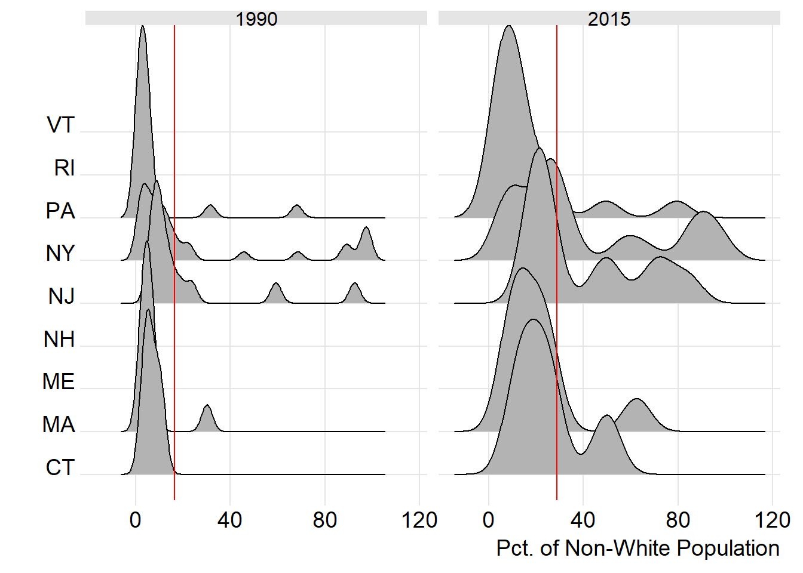
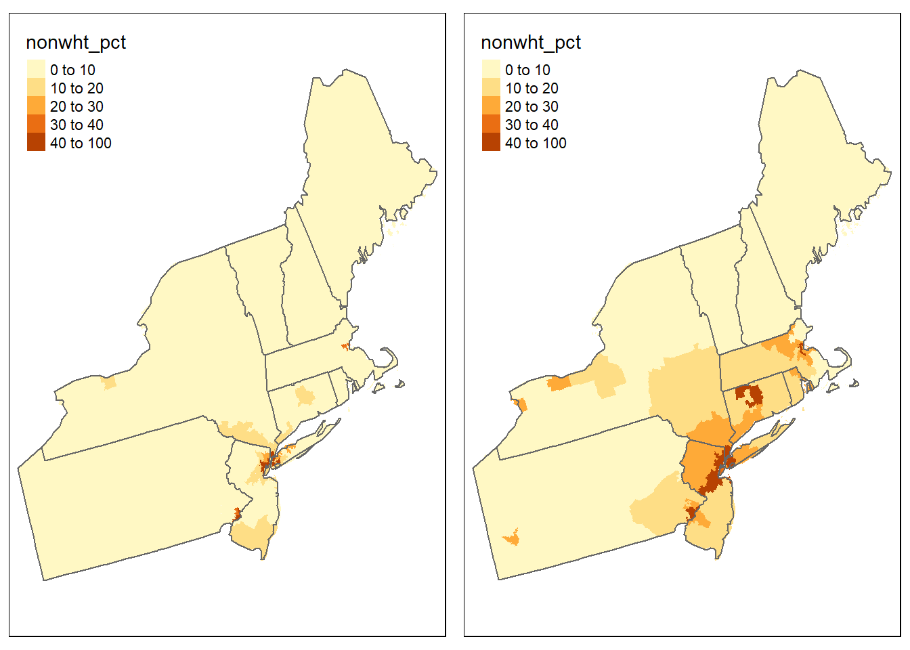
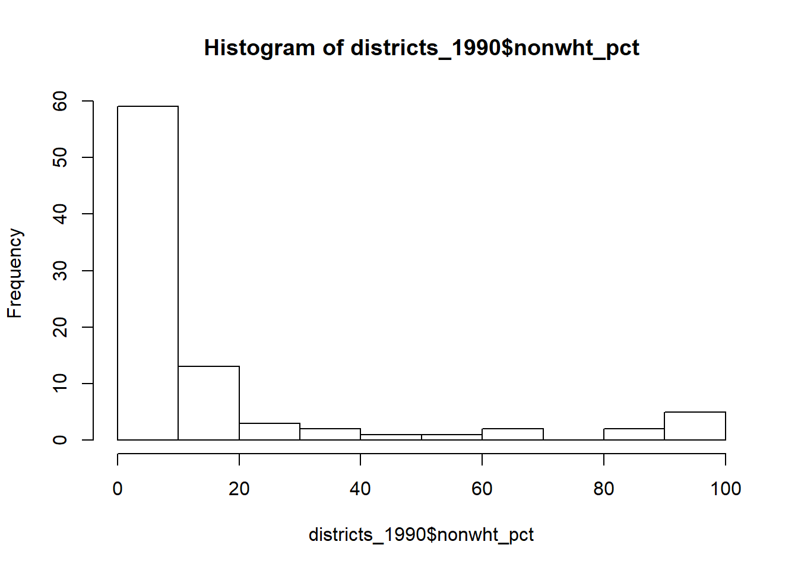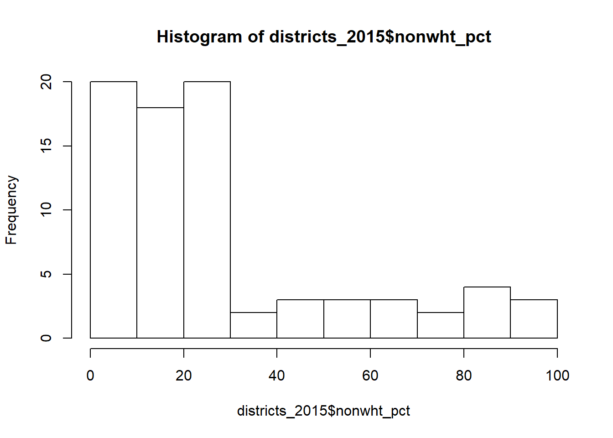
## Min. 1st Qu. Median Mean 3rd Qu. Max.
## 0.8084 3.0713 6.0933 16.5257 12.7728 98.3121## Min. 1st Qu. Median Mean 3rd Qu. Max.
## 3.458 9.881 21.183 28.760 30.178 98.761In congressional districts in the Northeast Region, percent non-white population has been significantly increased between 1990 and 2015, although most values exhibits values lower than 40%.
First, significant increases in the percent non-white population were identified from mean and median values for last 15 years. By simply comparing the values, % of non-white population were positively distributed in both 1990 and 2015. However, the highest peaks were shifted to the higher values from 1990 to 2015; mean values were shifted from 16.53 to 28.76 and median values were 6.10 to 21.18.
From histogram analysis, we can analyze where these shifts are attributed. We can find the kurtosis has been significantly changed between 1990 and 2015. In 1990, about 60% of districts in this region exhibited less than 10% of non-white population, but in 2015, values were shifted to higher range and the highest peak was diminished by more than half. In other words, the percent non-white population in both 1990 and 2015 follow Poisson distributions of low lambda values. However, the intensity between 0-10% in 1990 has been decreased and the peak were shifted and alleviated to 0-30% range in 2015.
Specifically, all of districts in the northeastern states exhibit similar trends to regional analysis, experiencing significant increase in percent non-white population. Among them, districts in New Jersey experienced the highest increase in percent non-white population with 37.69%, followed by New York with 29.06%. Meanwhile, districts in Maine, New Hampshire, and Vermont did not changed much in the percent of non-white population, with small increase around 3 or 4 percent.
Ridge plots of 1990 and 2015 reveal additional information that changes in higher ranges played significant role in increased mean and median values as well as supporting the abovementioned trends. In 2015, several districts in New York and New Jersey transformed into non-white population dominant districts with more than 70 or 80%. Likewise, Connecticut and Maine in 2015 have some districts with more than 40% of non-white population which did not exist in 1990.
2.2.2 Median Household Income
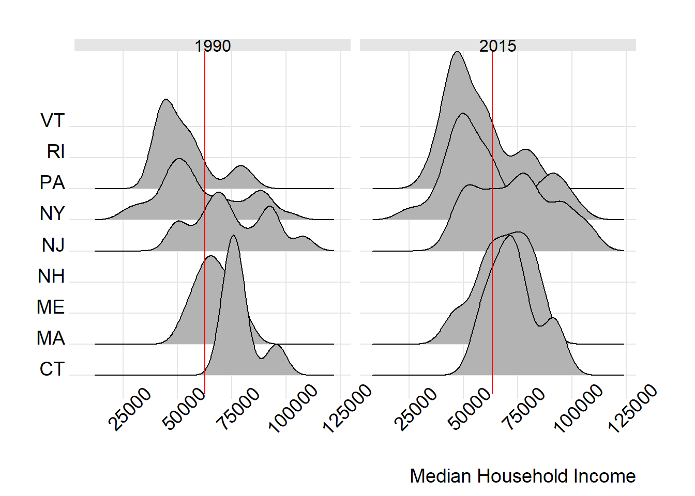
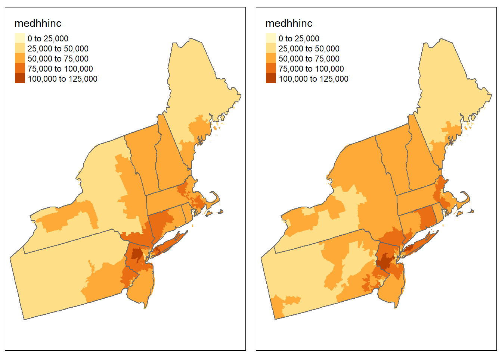
##
## <table style="text-align:center"><caption><strong>1990 Medium Household Income Summary Stats</strong></caption>
## <tr><td colspan="7" style="border-bottom: 1px solid black"></td></tr><tr><td style="text-align:left">Statistic</td><td>N</td><td>Mean</td><td>Median</td><td>Min</td><td>Max</td><td>St. Dev.</td></tr>
## <tr><td colspan="7" style="border-bottom: 1px solid black"></td></tr><tr><td style="text-align:left">districts_1990.medhhinc</td><td>88</td><td>62,504.840</td><td>58,867.500</td><td>25,937.060</td><td>107,859.200</td><td>17,357.080</td></tr>
## <tr><td colspan="7" style="border-bottom: 1px solid black"></td></tr></table>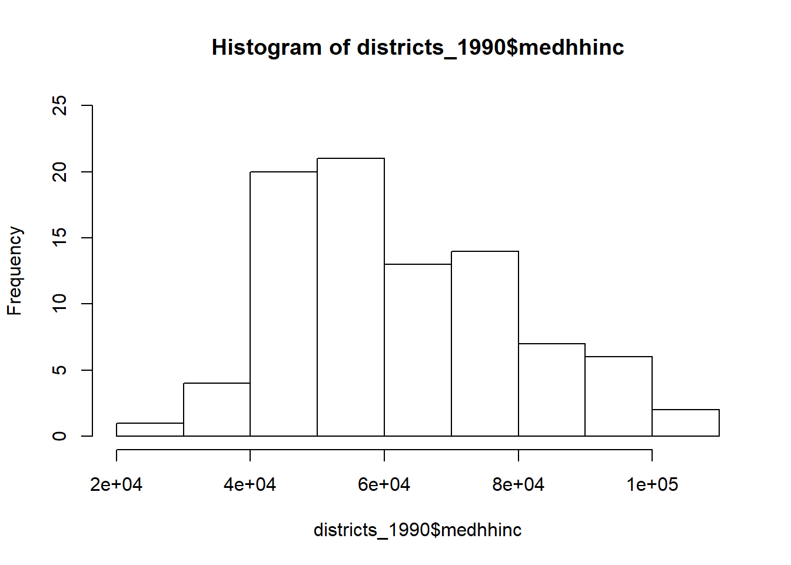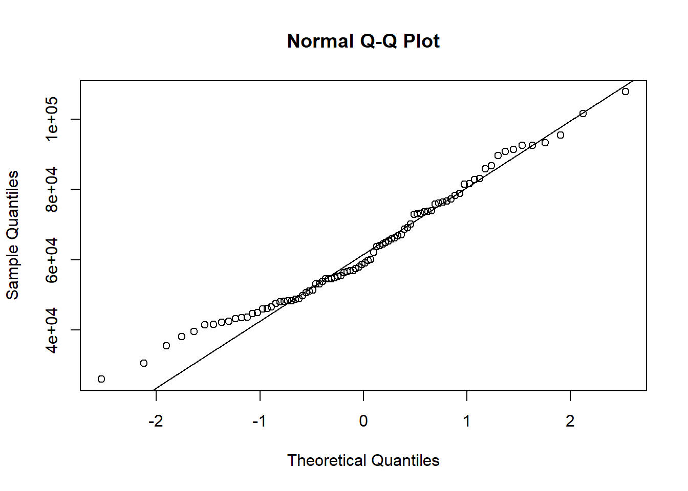
##
## <table style="text-align:center"><caption><strong>2015 Medium Household Income Summary Stats</strong></caption>
## <tr><td colspan="7" style="border-bottom: 1px solid black"></td></tr><tr><td style="text-align:left">Statistic</td><td>N</td><td>Mean</td><td>Median</td><td>Min</td><td>Max</td><td>St. Dev.</td></tr>
## <tr><td colspan="7" style="border-bottom: 1px solid black"></td></tr><tr><td style="text-align:left">districts_2015.medhhinc</td><td>78</td><td>63,251.250</td><td>61,136.500</td><td>25,100.000</td><td>106,917.000</td><td>17,544.940</td></tr>
## <tr><td colspan="7" style="border-bottom: 1px solid black"></td></tr></table>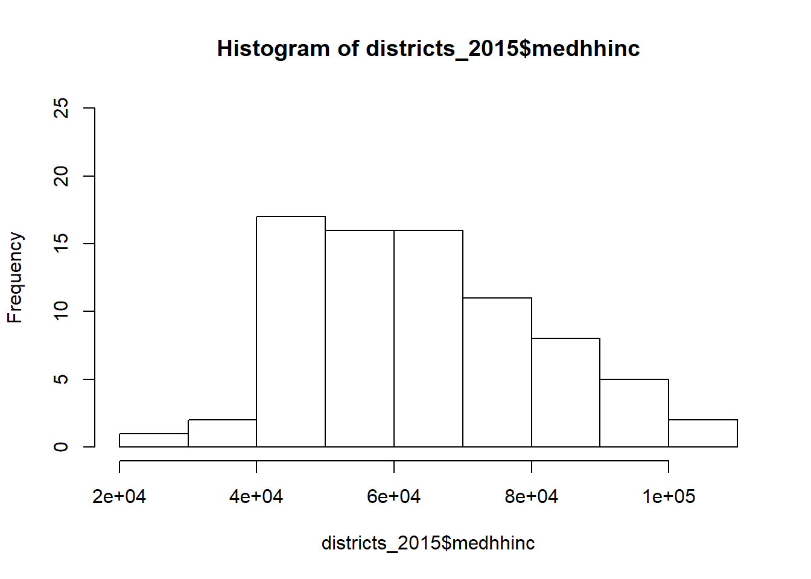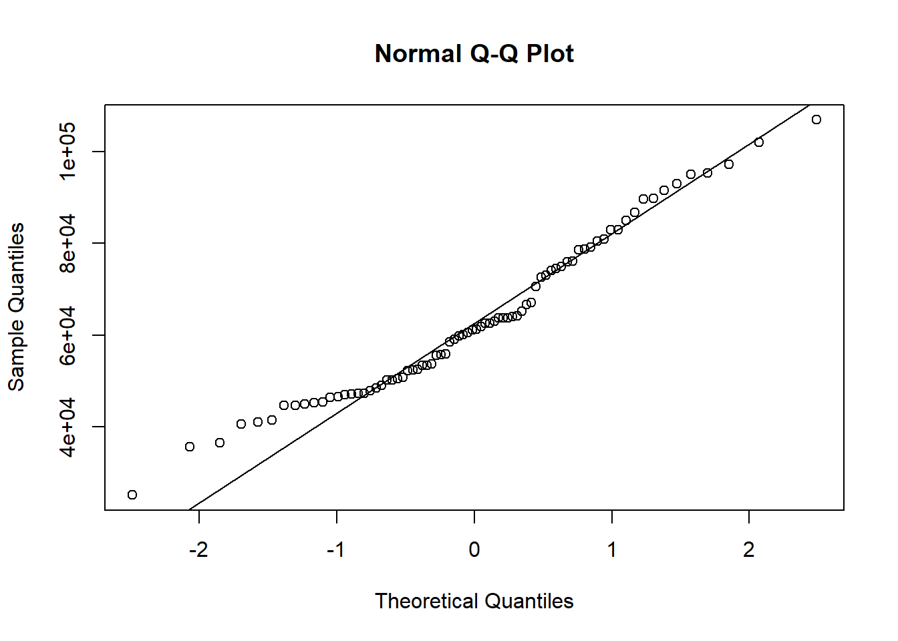
The median income for congressional districts in the northeastern United States have not exhibited much change in overall magnitude and range between 1990 and 2015. The range of median income for 1990 was $25,937 to $107,859 while the range for 2015 was $25,100 to $106,917. Median income across the districts for 1990 was positively skewed which could be inferred through the comparison of the mean and median values, $65,505 and $58,867 respectively. This was confirmed in the histogram plot of median income frequency with a right-side tail and in the Q-Q plot with a tail deviating from the Q-Q line at the bottom left of the graph.
Median income across the districts for 2015 appeared somewhat more normally distributed. The mean and median were very similar, $63,251 and $61,136 respectively. However, plotting the Q-Q plot still showed some skewness in the positive direction. Likewise, in the histogram plot of median income frequency, there appeared to be more districts exhibiting median income in the $40,000 to $70,000 range; a shift toward the right from 1990. It appears that median income levels were increasing slightly. There was an increase in the number of districts with median income in the $60,000 to $70,000 range and a decrease in the $30,000 to $40,000 range. These changes were subtle and could be explained in some part to the variation in sample size between the two years: 1990 with 88 districts and 2015 with 78 districts.
Using the ridge plots, comparisons could be made of median income at the state level. Similar trends seen at the region level were seen for individual states. States in 2015 exhibited broader platykurtic peaks in median income with less pronounced multimodality. For example, New Jersey in 1990 showed three strong peaks in median income at approximately $50,000, $70,000, and $85,000 where in 2015 they had flattened out. Another example, Connecticut, in 1990, exhibited strong leptokurtic kurtosis but by 2015 and had a more mesokurtic form.
Median income mapped at the district level showed more clearly the spatial changes that occurred between 1990 and 2015. In 2015, more districts fell in the $50,000 to $75,000 class which reflected the increase in median income seen in the previous statistical graphics and measurements. New York districts, in 1990, were predominantly classified as $25,000 to $50,000 while, in 2015, the state became more than fifty percent classified as $50,000 to $75,000. Another interesting trend was seen in Connecticut where a migration of higher income moved east, away from New York City. Similarly, there is a shift of higher income moving away from New York City in New Jersey to the southwest.
2.2.3 Percent with a Bachelor’s Degree
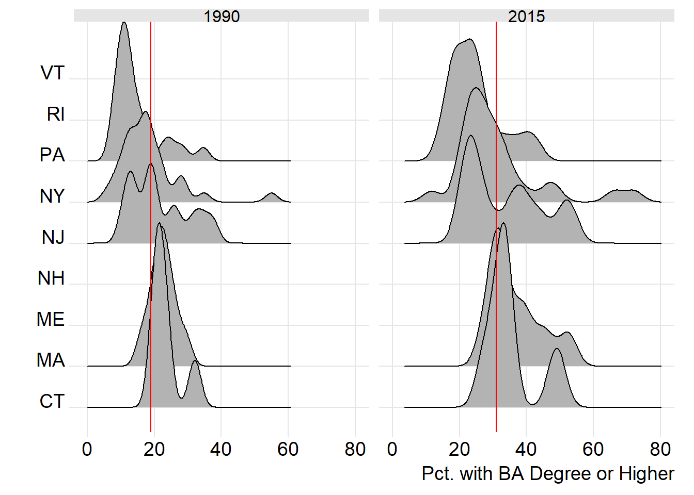
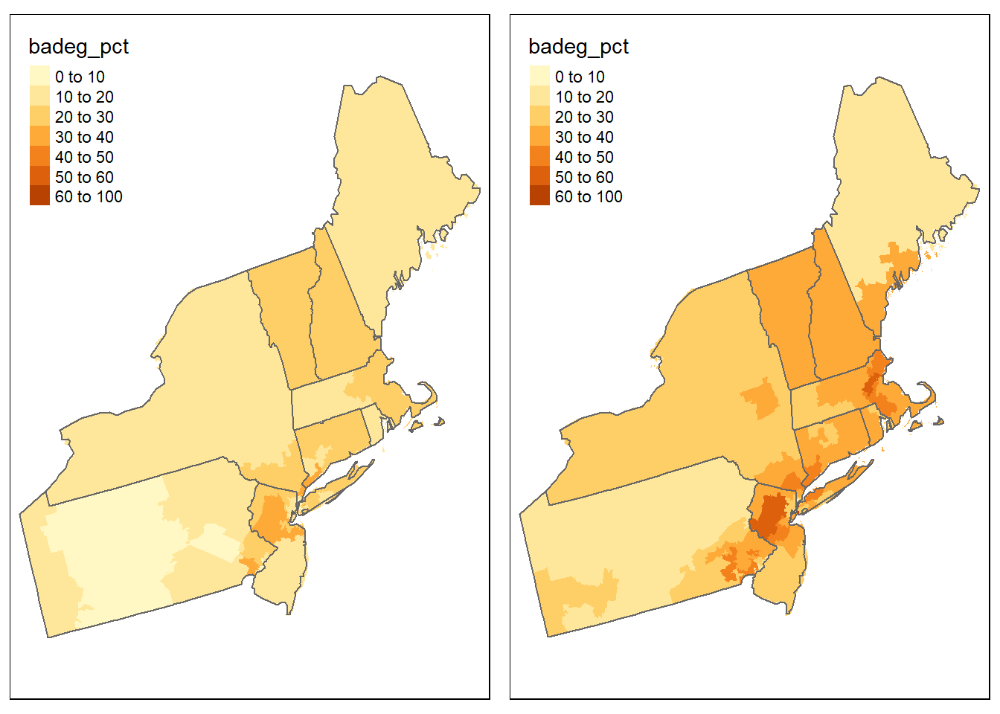
The ridge plots demonstrate that there is a shift in the mean to higher percentages from 1990 to 2015 in the Northeast Region. The overall range of the ridge plots from 1990 to 2015 shift to larger percentages with the 2015 plots having districts with as high as 75% of the population having a BA degree or higher. The ridge plots for New York, New Jersey, and Pennsylvania have a similar shape with a main peak in lower percentages, but a few smaller peaks in higher percentages. Comparing CT’s ridge plots from 1990 to 2015, the pattern of the curve stays the same however, there is a shift in the values towards higher percentages. New York has the largest range in percentages with some districts having almost 0% of the people with BA degrees or higher to 75% of the people having BA degrees or higher.
The spatial distribution map shows a similar pattern to the ridge plots, overall there is an increase in the percentage of people who have a Bachelor’s degree from 1990 to 2015, however in southwestern PA there appears to be no change to the percentage of people with a Bachelor’s degree. The largest percentages of people with a BA degree in 2015 are located in Northern New Jersey, southeastern New York, southern Connecticut, and eastern Massachusetts.
2.3 Models
2.3.1 Percent not White, non-Hispanic
| Model results | ||
| Pct. voting democratic | ||
| 1992 | 2016 | |
| (1) | (2) | |
| nonwht_pct | 0.264*** | 0.432*** |
| (0.058) | (0.050) | |
| Constant | 42.781*** | 42.185*** |
| (1.792) | (1.930) | |
| Observations | 88 | 78 |
| R2 | 0.195 | 0.500 |
| Adjusted R2 | 0.186 | 0.493 |
| Residual Std. Error | 14.220 (df = 86) | 11.486 (df = 76) |
| F Statistic | 20.880*** (df = 1; 86) | 75.900*** (df = 1; 76) |
| Note: | p<0.1; p<0.05; p<0.01 | |
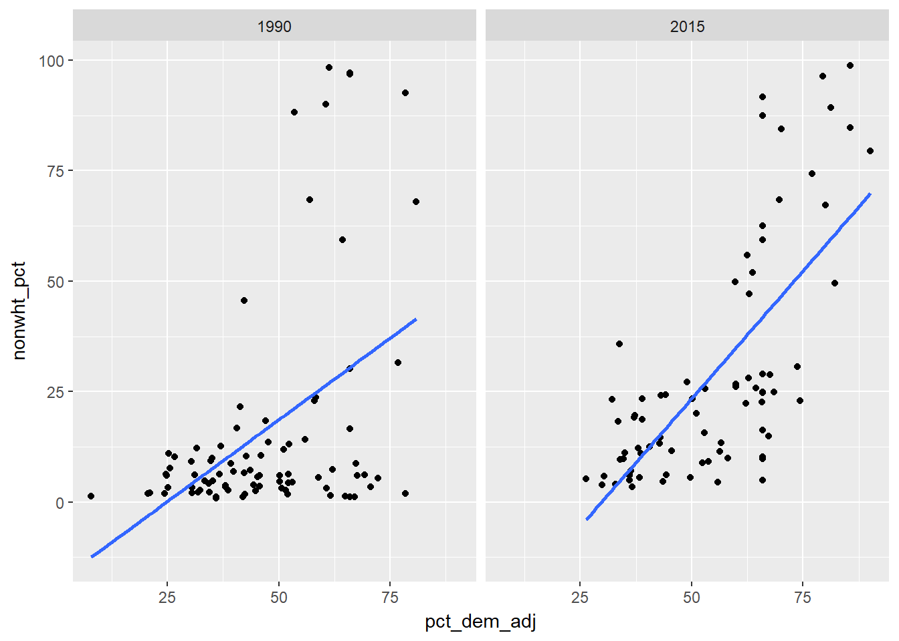
Linear regression model is applied to identify how the percent non-white population is related to the percent voting democrat. According to the results, linear regression results follow heteroskedasticity in plotting two variables, more significantly for the result of 1990. Since districts with low percent non-white populations show extremely wide-ranging percent voting democrat, it is hard to draw meaningful analysis from this range due to the residuals. In addition, more than half of districts in Northeast region are of the low percent non-white population which lead to deteriorate the power of model (e.g. R-squared value).
Despite these weaknesses, the percent non-white population in congressional districts tend to exhibit positive relation to percent voting democrat overall; as 1% of non-white population increases, the percent of people who vote Democrat increases by .26% in 1990 and .43% in 2015. P-values for both regression results were less than 0.01 that explain high significance of the results. Adjusted R-squared values, which refer to the explanation power, are estimated as .186 for 1990 and .493 for 2015 indicating that 18.6% and 49.3% of data are explained by linear regression model.
One noticeable point from the linear regression models is that the result for 2015 is highly improved than 1990. The reason behind the improvement can be attributed to the shift of the percent non-white population. When we see scatter plots from two models, the most noteworthy difference is that the points ranged from 0 to 10% in x-axis and 0 to 80% in y-axis in 1990 shifted to 0-30% in x-axis and 25-70% in y-axis in 2015. The change in distribution resulted in reduced residuals of linear regression and increased model significance.
2.3.2 Median Household Income
| Model results | ||
| Pct. voting democratic | ||
| 1992 | 2016 | |
| (1) | (2) | |
| medhhinc | -0.0003*** | -0.0001 |
| (0.0001) | (0.0001) | |
| Constant | 65.881*** | 63.848*** |
| (5.994) | (6.832) | |
| Observations | 88 | 78 |
| R2 | 0.109 | 0.025 |
| Adjusted R2 | 0.099 | 0.012 |
| Residual Std. Error | 14.964 (df = 86) | 16.031 (df = 76) |
| F Statistic | 10.513*** (df = 1; 86) | 1.970 (df = 1; 76) |
| Note: | p<0.1; p<0.05; p<0.01 | |
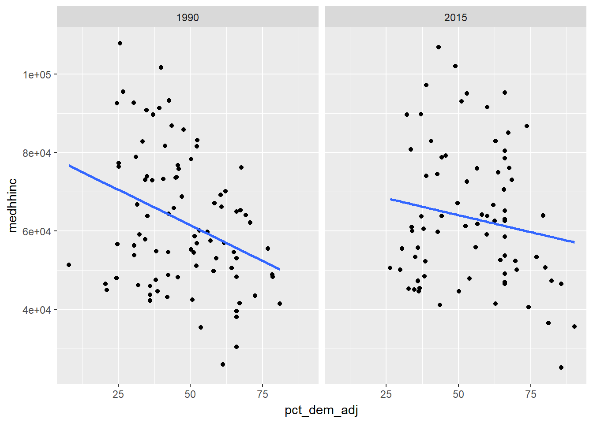
Linear regression was used to model percent voting democrat based on median income at the congressional district level for states in the northeast. Two linear models were made, one for 1990 and one for 2015. Both models appeared to show little correlation in median income and percent voting democrat. The model for 1990 had an R2 value of 0.109, meaning median income described 10.9% of the variation seen in percent voting democrat across districts. The 2015 model received an R2 of 0.025, describing even less variation than the 1990 model. The direction of both coefficients suggested that there was a negative correlation between median income and percent voting democrat. However, only the coefficient for the 1990 model showed significance at the 0.05 level. The 2016 model coefficient received a p-value of 0.164.
2.3.3 Percent with a Bachelor’s Degree
| Model results | ||
| Pct. voting democratic | ||
| 1992 | 2016 | |
| (1) | (2) | |
| badeg_pct | -0.483** | 0.193 |
| (0.206) | (0.167) | |
| Constant | 56.286*** | 48.614*** |
| (4.217) | (5.491) | |
| Observations | 88 | 78 |
| R2 | 0.060 | 0.017 |
| Adjusted R2 | 0.049 | 0.004 |
| Residual Std. Error | 15.366 (df = 86) | 16.097 (df = 76) |
| F Statistic | 5.530** (df = 1; 86) | 1.337 (df = 1; 76) |
| Note: | p<0.1; p<0.05; p<0.01 | |
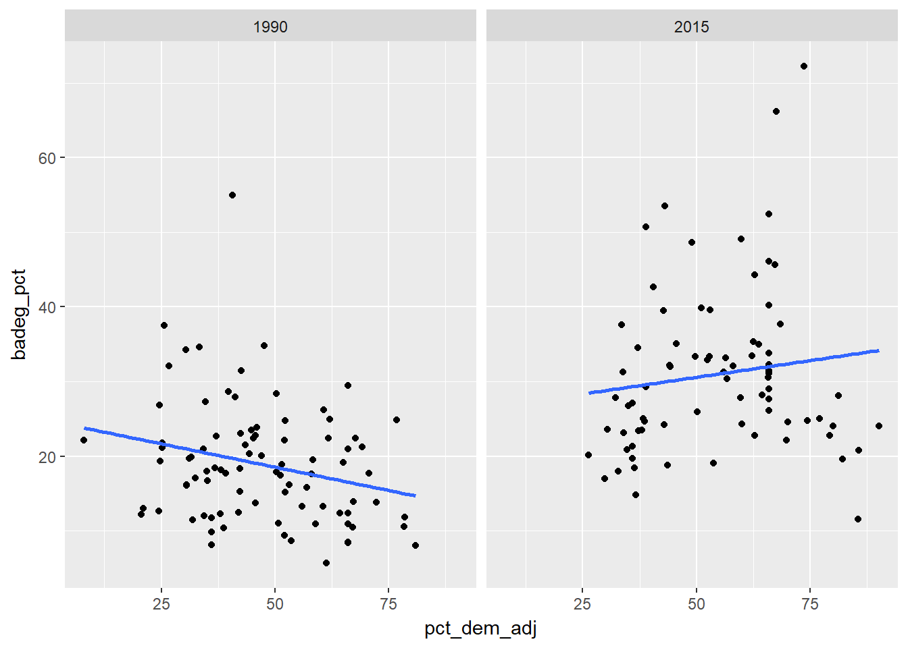
The model output for 1992 displays that for every percent increase in people with a Bachelor’s degree the percent of people who vote democratic decreases by .483, this value is fairly large in magnitude with an approximate .5% decrease for every increase in BA degree. This value is statistically significant based on the p value. When examining the power of the the adjusted R2 value is very low indicating that the regression line does not fit well with the data. In addition, The F statistic is significant indicating the ability to reject the null hypothesis, so this model is better than one with only the intercept. The scatterplot for the 1992 model, shows a slight decrease in democratic voting percentage as BA degree percentage increases, it appears there is a possible high outlier on this plot. Although the model output indicates that the regression line is not a good fit for the data, the scatter plot’s regression line divides the data well as to display a normal distribution of the residuals.
There is a shift when analyzing the results for the 2016 model output. For every percent increase in people with a Bachelor’s degree, the percentage of voting democratic increased by .193, this value is not as large as the 1992 model and is also not statistically significant. When examining the power of the 2016 model, the adjusted R2 is even lower than the 1992 model, so this regression line does not fit the data well. The F Statistic is not statistically significant, so the null hypothesis cannot be rejected indicating that this model is no better than a model with just the intercept. Although the scatter plot displays the regression line that shows a slight increase in percentage democratic vote as percentage BA degree increases, there does not appear to be a clear linear pattern in the data as well as quite a few outliers.
2.3.4 Multivariate Models
| Model results | ||
| Pct. voting democratic | ||
| 1992 | 2016 | |
| (1) | (2) | |
| nonwht_pct | 0.225*** | 0.401*** |
| (0.060) | (0.047) | |
| medhhinc | -0.0002 | -0.0004*** |
| (0.0001) | (0.0001) | |
| badeg_pct | 0.087 | 0.747*** |
| (0.291) | (0.179) | |
| Constant | 55.602*** | 43.293*** |
| (6.332) | (5.092) | |
| Observations | 88 | 78 |
| R2 | 0.236 | 0.595 |
| Adjusted R2 | 0.209 | 0.578 |
| Residual Std. Error | 14.022 (df = 84) | 10.478 (df = 74) |
| F Statistic | 8.641*** (df = 3; 84) | 36.179*** (df = 3; 74) |
| Note: | p<0.1; p<0.05; p<0.01 | |
## nonwht_pct medhhinc badeg_pct
## 1.117154 2.475413 2.406476## nonwht_pct medhhinc badeg_pct
## 1.091564 2.865457 2.721901## badeg_pct medhhinc nonwht_pct pct_dem_adj
## badeg_pct 1.00 0.76 -0.28 -0.25
## medhhinc 0.76 1.00 -0.32 -0.33
## nonwht_pct -0.28 -0.32 1.00 0.44
## pct_dem_adj -0.25 -0.33 0.44 1.00
##
## n= 88
##
##
## P
## badeg_pct medhhinc nonwht_pct pct_dem_adj
## badeg_pct 0.0000 0.0090 0.0210
## medhhinc 0.0000 0.0024 0.0017
## nonwht_pct 0.0090 0.0024 0.0000
## pct_dem_adj 0.0210 0.0017 0.0000## badeg_pct medhhinc nonwht_pct pct_dem_adj
## badeg_pct 1.00 0.79 -0.09 0.13
## medhhinc 0.79 1.00 -0.24 -0.16
## nonwht_pct -0.09 -0.24 1.00 0.71
## pct_dem_adj 0.13 -0.16 0.71 1.00
##
## n= 78
##
##
## P
## badeg_pct medhhinc nonwht_pct pct_dem_adj
## badeg_pct 0.0000 0.4287 0.2512
## medhhinc 0.0000 0.0338 0.1645
## nonwht_pct 0.4287 0.0338 0.0000
## pct_dem_adj 0.2512 0.1645 0.0000##
## studentized Breusch-Pagan test
##
## data: multimodel1990
## BP = 11.146, df = 3, p-value = 0.01096##
## studentized Breusch-Pagan test
##
## data: multimodel2015
## BP = 0.72458, df = 3, p-value = 0.8674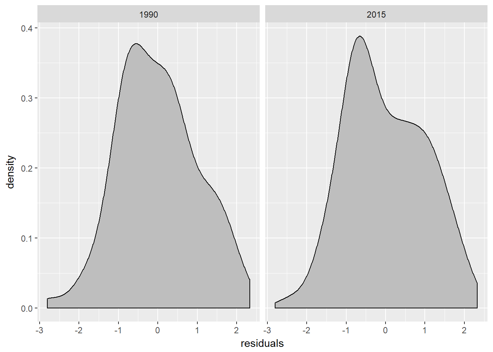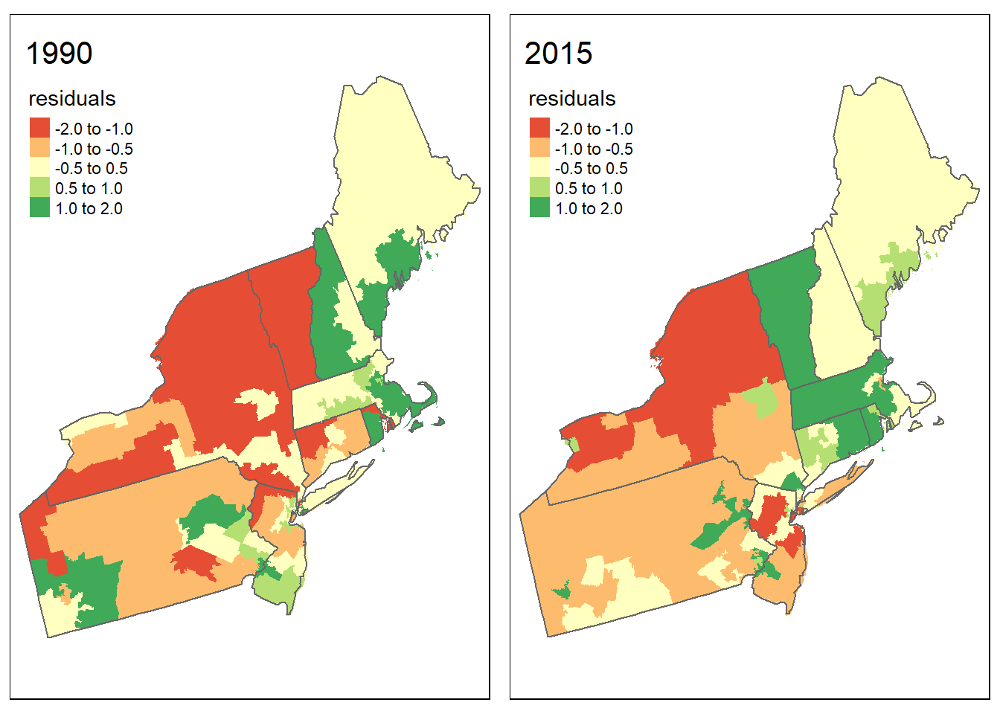
When comparing the 1992 multivariate model to the individual models, all of the models are statistically significant based on the F Statistic indicating that these models are better than a model made of only the intercept. Overall, the multivariate model fits the data better than the individual models as indicated by the larger adjusted R2 value. Although, the multivariate model is better than the individual models, two of the three variables coefficients (median household income and percent with BA degree) are not statistically significant. Both the percent BA degree and the non-white percent coefficients result in an increase in the percent voting democratic. Based on the results of the VIF, multicollinearity is not an issue because all of the values are less the 5 referring that three variables are independent each other. In addition, heteroskedasticity is an issue based on the statistically significant results of the BP test, so the null hypothesis that the data is not heteroskedastic can be rejected. The density plots of the residuals indicate that the data is approximately normally distributed, which is important because when this assumption is met the results of the model can be trusted more accurately. Examining the spatial distribution of the residuals, the model overestimated the percent democratic vote in most of New York and Vermont, as well as some districts in northwestern PA, northern NJ, and western CT. The model underestimated the democratic voting percentage in districts in southwestern PA, most of Rhode Island, eastern MA, most of NH, and southern ME.
The 2016 multivariate model results indicate that this model is more powerful not only than a model made up of only the intercept based on the results of the F test as well as more powerful than the univariate models. In addition, the multivariate model fits the data much better than the 2016 univariate models and the 1992 multivariate model based on the larger adjusted R2 value. Unlike the 1992 multivariate model, all of the coefficients of the 2016 model are statistically significant. As with the 1992 results, an increase in both the non-white percent variable and the BA degree percent result in an increase in the percent voting democratic. Similar to the 1992 results, multicollinearity is not an issue in this case due to the VIF values being lower than 5. Unlike the 1992 results, heteroskedasticity is not an issue because the p value is not statistically significant based on the BP test, so the null hypothesis that the data is not heteroskedastic cannot be rejected. Based on the density plots, it appears that the residuals are normally distributed, which meets the assumption necessary for trusting the results of the models. Examining the residuals spatial distribution, the model overestimates the voting percentage in northern and central NJ, much of NY, while the largest areas of underestimates are located in VT, MA, eastern CT, and RI.
2.4 Summary
The multivariate model was a stronger predictor of democratic voting than individual univariate models. The variables in the 2016 model explain more of the variation seen percent democratic voting than in 1992.
Race and education level appear to be defining party lines more through time in the Northeast. There have been changes in the geographic distribution of these variables. In 1992, the Northeast region was predominantly white. As time goes on, the non-white percent population increases and spreads, emanating from population centers, i.e. New York City. The demographic distribution has had a greater influence on the percent voting democratic.
The variables percent non-white and median household income both doubled in strength between 1992 and 2016, though their directions are opposite. The percent BA degree or higher became significant and an influential factor in predicting democratic voting through time.
Based on our results, the voting patterns of 2016 in the Northeast were more influenced by the variables studied here than 1992. The models indicate that other variables may have affected the voting patterns in 1992, therefore it could be beneficial to include different contributors to better understand the democratic vote in 1992.